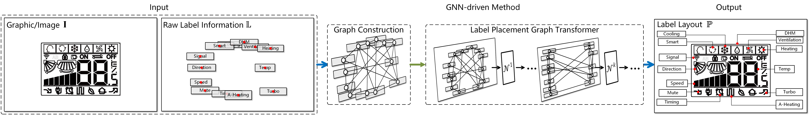
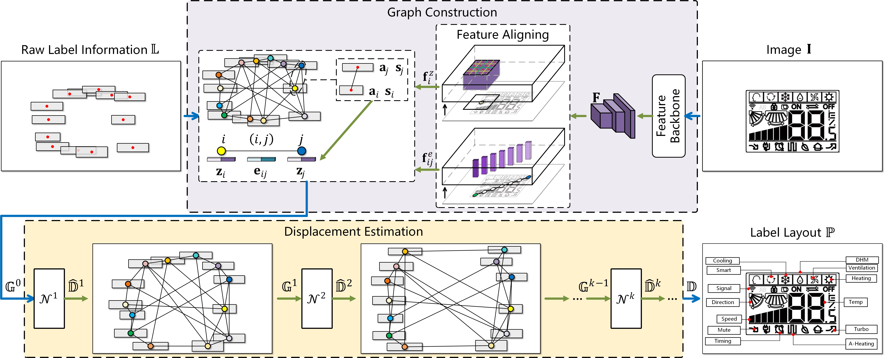
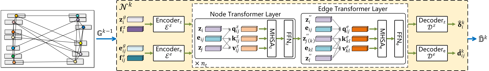
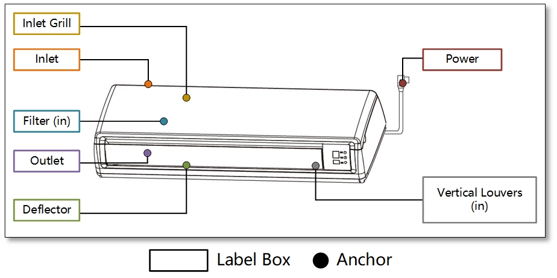
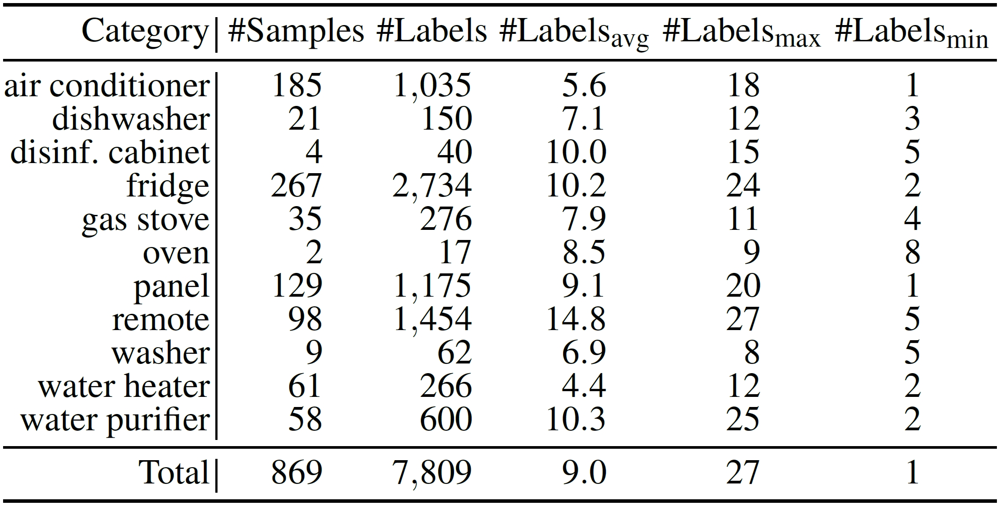
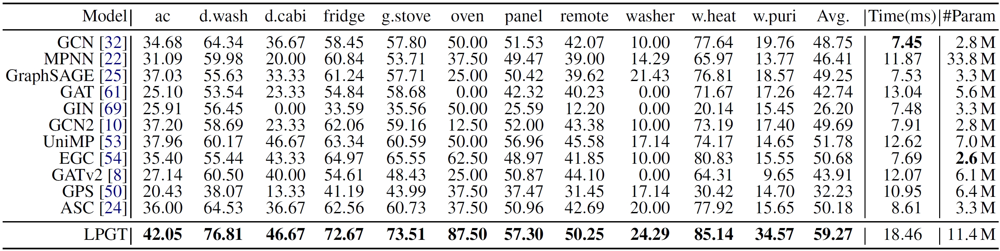
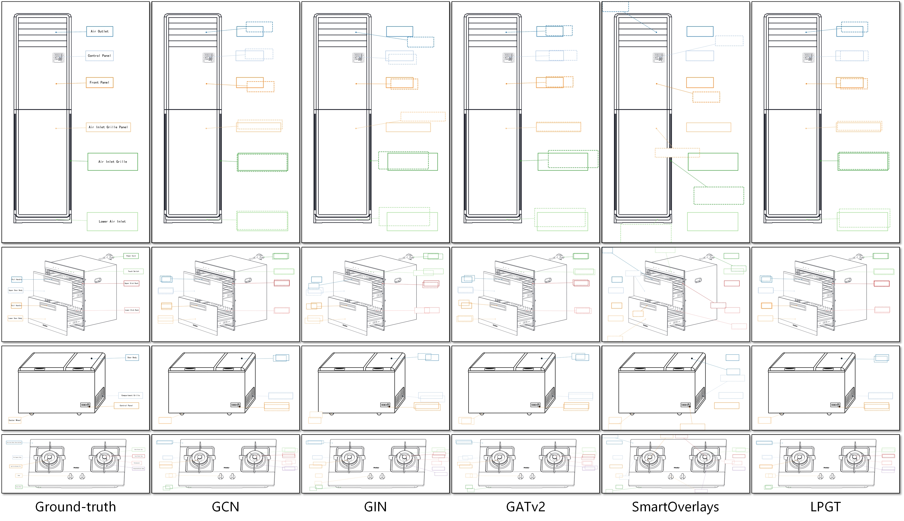
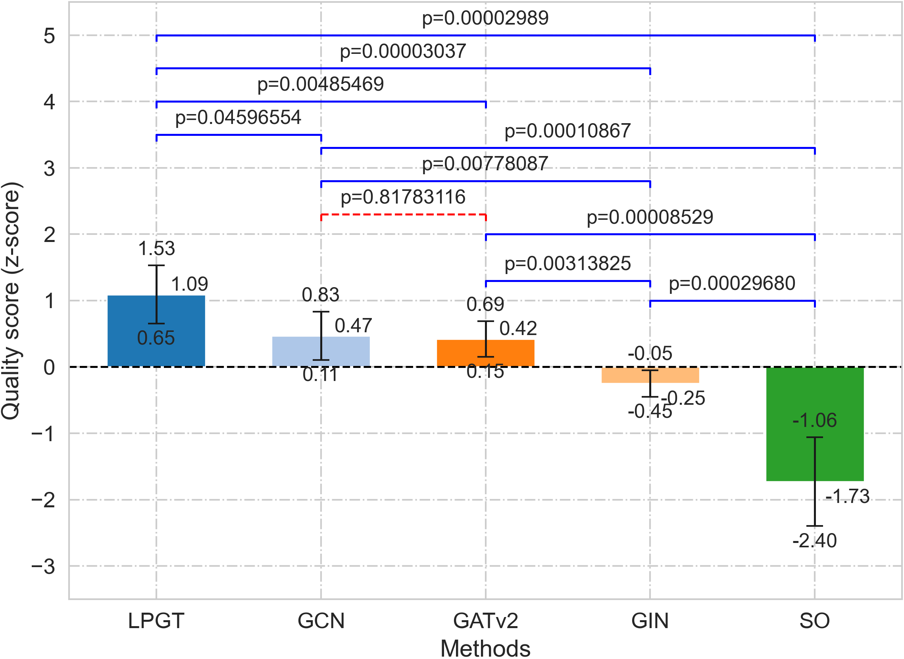

Graph Transformer for Label Placement
Jingwei Qu1
Pingshun Zhang1
Enyu Che1
Yinan Chen1
Haibin Ling2∗
1Southwest University 2Stony Brook University
[PDF]
[Code]
[Data]
Abstract
Placing text labels is a common way to explain key elements in a given scene. Given a graphic input and original label information, how to place labels to meet both geometric and aesthetic requirements is an open challenging problem. Geometry-wise, traditional rule-driven solutions struggle to capture the complex interactions between labels, let alone consider graphical/appearance content. In terms of aesthetics, training/evaluation data ideally require nontrivial effort and expertise in design, thus resulting in a lack of decent datasets for learning-based methods. To address the above challenges, we formulate the task with a graph representation, where nodes correspond to labels and edges to interactions between labels, and treat label placement as a node position prediction problem. With this novel representation, we design a Label Placement Graph Transformer (LPGT) to predict label positions. Specifically, edge-level attention, conditioned on node representations, is introduced to reveal potential relationships between labels. To integrate graphic/image information, we design a feature aligning strategy that extracts deep features for nodes and edges efficiently. Next, to address the dataset issue, we collect commercial illustrations with professionally designed label layouts from household appliance manuals, and annotate them with useful information to create a novel dataset named the Appliance Manual Illustration Labels (AMIL) dataset. In the thorough evaluation on AMIL, our LPGT solution achieves promising label placement performance compared with popular baselines.
GNN-driven label placement
Architecture of LPGT
The k-th GNN module
An illustration with its annotations
Data statistics of the AMIL dataset
Quantitative Results
Comparison of label layout quality PCK@0.05 (%) and efficiency on the AMIL dataset. Numbers in bold indicate the best performance.
Qualitative Results
Qualitative results on the AMIL dataset.
User Study
Results of the user study: quality scores with 95% confidence intervals.
Reference
@article{qu2024graph,
|